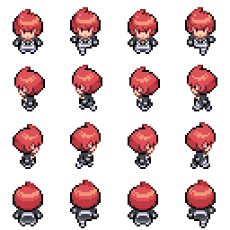

CHARACTERS:
REBEL
-Age: 14
-Location: Savir Town
-Pokémon team: That's up to you!
Rebel has always been a bit shy, yet she has a really strong personality. She wants to become a great trainer and that's why she signed up for the gym challenge together with her childhood friend Rogue. Rebel has a great heart as well, and never leaves her friends behind. She is smart and will help her friends no matter in which problems they are in, while also doing anything to prove herself, even if it includes defeating you in a battle.
Sprites:


ROGUE
-Age: 14
-Location: Savir Town
-Pokémon team: That's up to you!
Rogue has always been a bit shy, yet she has a really strong personality. He wants to become a great trainer and that's why he signed up for the gym challenge together with her childhood friend Rogue. Rogue has a great heart as well, and never leaves her friends behind. He is smart and will help his friends no matter in which problems they are in, while also doing anything to prove himself, even if it includes defeating you in a battle.
Sprites:
DAWN
-Age: 23
-Location: Amberia City
-Pokémon team:
Rotom
Ninetales
Froslass
PorygonZ
Glaceon
Piplup - only as a lab partner
Pokémon mysteries have always been Dawn's passion, so when Rowan retired from the lab's life, she decided to replace him as his successor. From that moment and ever since, she has continued researching the evolution phenomena, leaving the trainer's life behind but working with the same heart-passion.
Sprites:

Neo Team Galactic Grunts
-Age: ???
-Location: Sinnoh
-Pokémon team: ???
Some of them left the organization when it dissapeared. But some others have now joined Saturn to form a new Team Galactic with a single goal in mind: bring back Cyrus. In contrast with the old ones, these grunts are formed as an elite, although that doesn't imply that all of them are actually prepared to be so.
Sprites:


Mars
-Age: 36
-Location: Sinnoh
-Pokémon team:
Purugly
Houndoom
Crobat
Ever since Cyrus, a very important person for her, disappeared from this world, Mars has always questioned herself whether his plans were that brilliant or not, and she even ended up losing her stunning self confidence.
Sprites:
